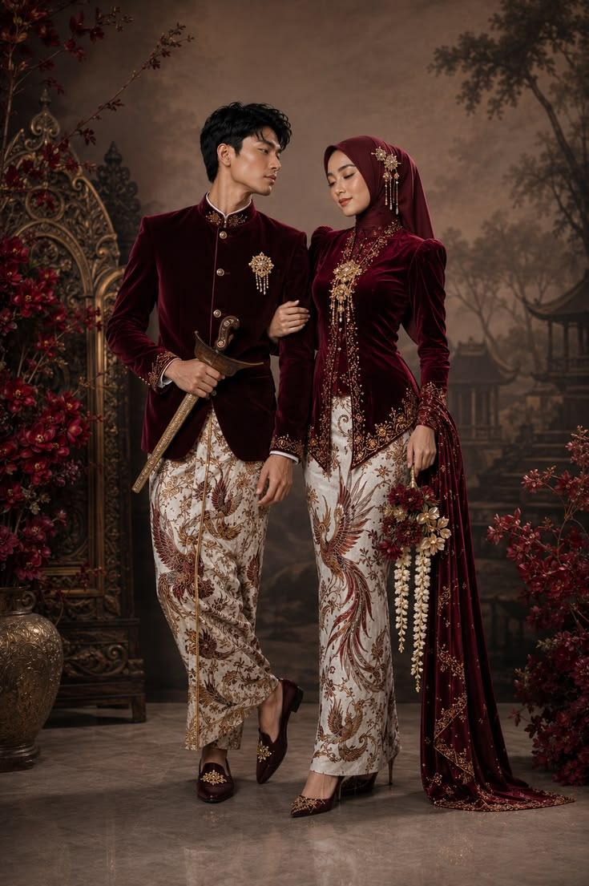
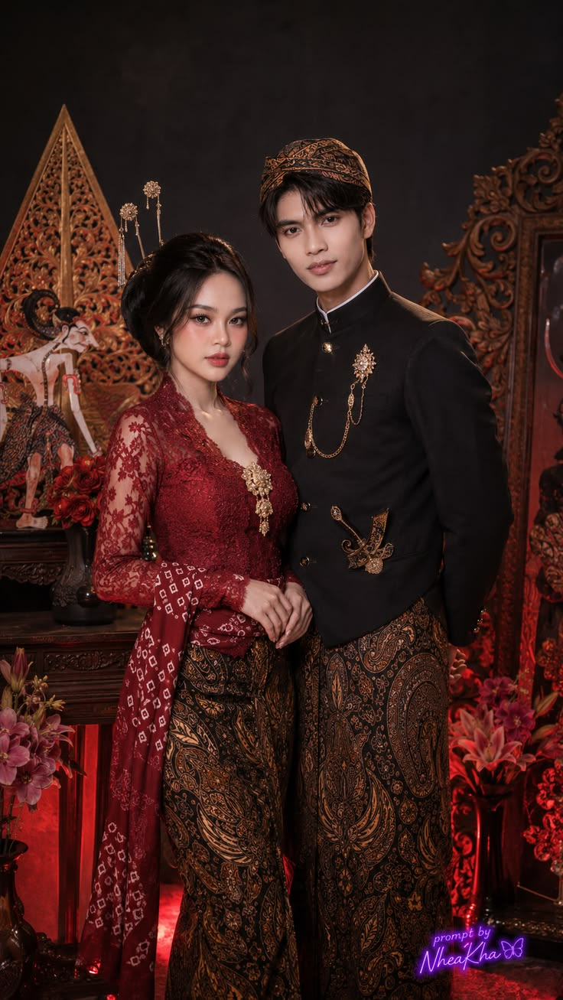

DENGAN MEMOHON RAHMAT TUHAN
Kami Mengundang Anda
Untuk hadir dan memberikan doa restu pada hari bahagia kami.
Laila Ayu & Naufal Fayyadhani Ramadhan
Minggu, 8 Oktober 2029
DUA HATI MENJADI SATU
Mempelai
L
Laila Ayu
Putri pertama dari Bapak Budi dan Ibu Sari
F
Naufal Fayyadhani Ramadhan
Putra pertama dari Bapak Anton dan Ibu Dina
CATAT TANGGALNYA
Waktu & Tempat
Akad Nikah
Minggu, 8 Oktober 2029
08.00 WIB - selesai
Resepsi
Minggu, 8 Oktober 2029
11.00 - 14.00 WIB
Rumah Mempelai
Jl. Kh. Zainuddin No.46, Maras, Rogojampi, Kec. Rogojampi, Kabupaten Banyuwangi, Jawa Timur 68462
Lihat PetaDOA DAN RESTU
Terima Kasih
Merupakan kebahagiaan bagi kami apabila Bapak/Ibu/Saudara berkenan hadir dan memberikan doa restu.
KENANGAN INDAH KAMI
Our Memories
Beberapa momen indah yang menjadi bagian dari perjalanan cinta kami.

